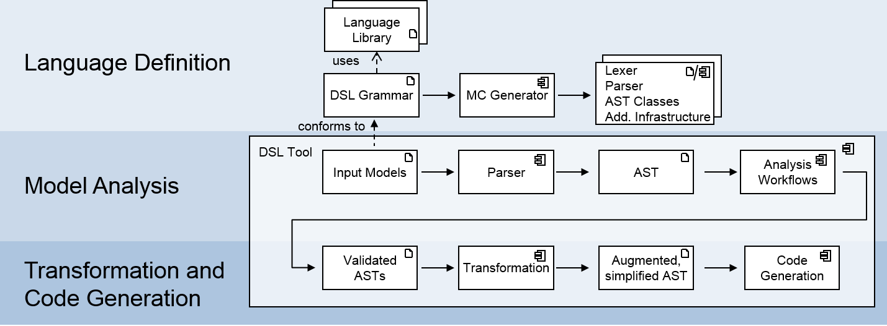

Introduction
Definition of Domain-Specific Languages and their purpose.
The distinction between DSLs and general-purpose programming languages.
Characteristics of DSLs
1. Narrow Scope:
- Explanation of DSLs having a specific, limited scope within a particular domain.
2. Abstraction:
- How DSLs provide a higher level of abstraction tailored to a specific problem domain.
3. Expressiveness:
- The focus on expressiveness for specific tasks within a given domain.
4. Target Audience:
- Identifying the target audience for DSLs, often domain experts or non-programmers.

Types of DSLs
Textual DSLs:
- Overview of DSLs implemented with text-based syntax.
- Examples include regular expressions, configuration files.
Graphical DSLs:
- Introduction to DSLs with graphical representations.
- Examples include circuit design languages, graphical modeling languages.
Internal DSLs:
- Explanation of DSLs embedded within a general-purpose programming language.
- Advantages of internal DSLs in terms of familiarity and flexibility.
External DSLs:
- Overview of standalone DSLs with their own syntax and compilers.
- Advantages of external DSLs in terms of dedicated tooling.
Use Cases for DSLs
Database Query Languages:
- DSLs for querying databases, like SQL for relational databases.
Markup Languages:
- Explanation of DSLs used for specific types of document markup, like HTML or LaTeX.
Build Configuration Languages:
- DSLs for defining build configurations, such as Gradle or Make.
Scientific Modeling Languages:
- DSLs designed for specific scientific or engineering domains.
Advantages of DSLs
Expressiveness:
- Improved expressiveness for specific tasks within a domain.
Productivity:
- Increased productivity as DSLs are tailored to specific tasks.
Readability:
- Enhanced readability due to a closer alignment with the problem domain.
Abstraction:
- Effective abstraction of complex concepts within a particular domain.
Challenges of DSLs
Learning Curve:
- Learning curve for users, especially those not familiar with programming concepts.
Maintenance:
- Maintenance challenges if the DSL evolves or requires updates.
Tooling:
- Development and maintenance of dedicated tooling for external DSLs.
Designing and Implementing DSLs
Identifying the Domain:
- Steps for identifying and understanding the target domain.
Defining Syntax and Semantics:
- Deciding on the syntax and semantics of the DSL.
Implementation Choices:
- Choosing between internal and external DSLs based on project requirements.
Choosing the Right DSL
Project Considerations
- Factors influencing the choice: specific domain, user expertise, development resources.
Compatibility
- Evaluating the compatibility of DSLs with existing systems.
Flexibility
- Considering the flexibility needed for potential changes in the domain.
Conclusion
Recap of key points about Domain-Specific Languages.
Emphasize the significance of DSLs in enhancing productivity within specific domains.
Encourage developers to explore and design DSLs when appropriate for their projects.